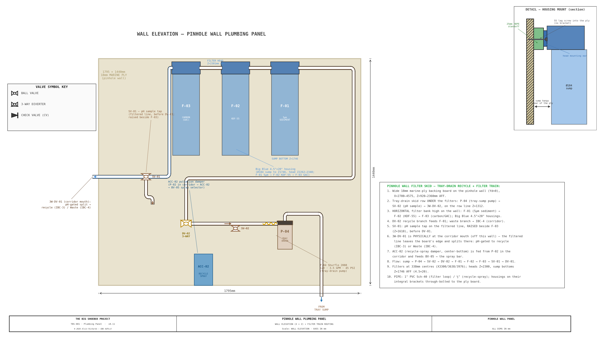
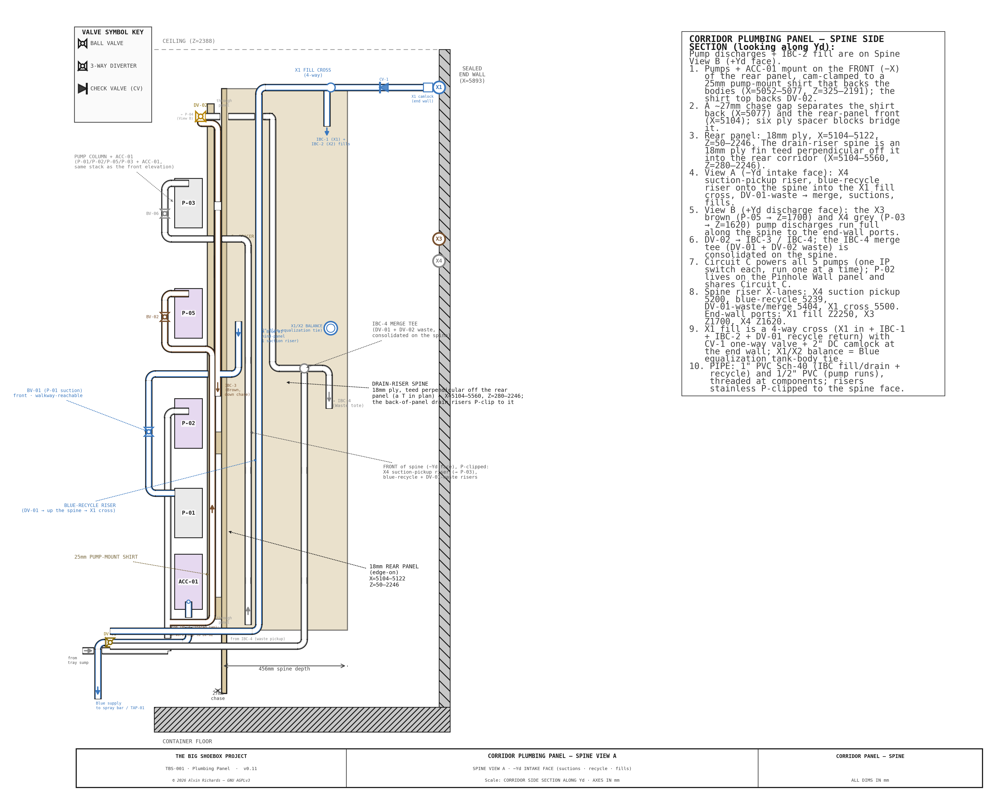
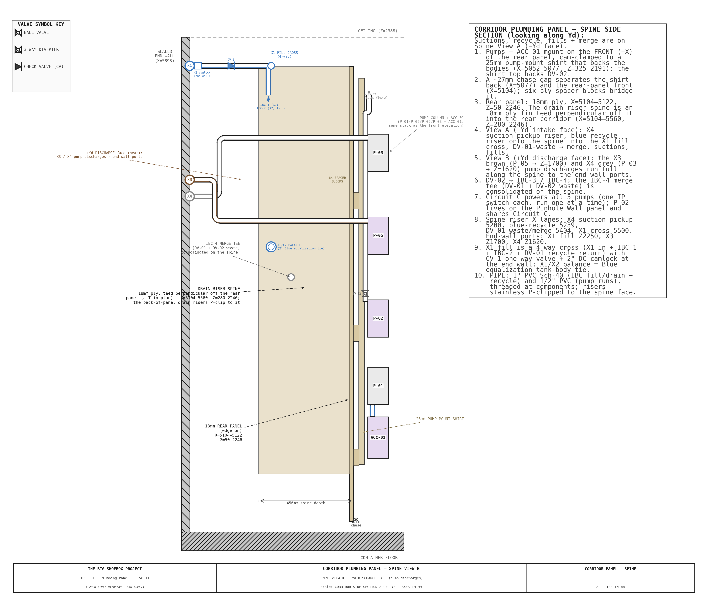

Plumbing Report¶
Two plumbing panels. The water-handling equipment is split across two panels: the Corridor Plumbing Panel (pumps P-01/P-03/P-04/P-05, accumulator ACC-01, diverter DV-02, sample tap SV-02, pump-suction isolation valves — mounted in the IBC plumbing corridor) and the Pinhole Wall Plumbing Panel (the wet-end filter loop: pump P-02, the 3-stage Big Blue filter, diverter DV-01, sample tap SV-01 — mounted on the pinhole wall). This report covers both.
Interactive 3D model¶
TBS-001 Water System Model by alvin91403 on Sketchfab
1. Purpose¶
The water-handling equipment mounts on two plumbing panels:
- The Corridor Plumbing Panel — an 18mm marine plywood board mounted vertically at the front (cargo-door-facing) mouth of the IBC plumbing corridor on the front-portal frame (270mm corridor width × 2,060mm tall). It carries the waste/recycle pumps (P-01, P-03, P-04, P-05), the pressure accumulator (ACC-01), the Stage-A diverter (DV-02), the pH sample tap (SV-02), and the pump-suction isolation valves.
- The Pinhole Wall Plumbing Panel — the wet-end filter loop mounted on the pinhole wall: pump P-02, the 3-stage Big Blue filter (F1/F2/F3), the filter-output diverter (DV-01), and the pH sample tap (SV-01).
Each panel concentrates its part of the system in one accessible location. The panels serve three functions:
- Structural mounting surface — provides a rigid, flat substrate for equipment that would otherwise require individual mounting brackets on the corrugated container walls.
- Plumbing coordination — all pump suction and discharge lines, filter connections, and valve positions are organized on one face, minimizing pipe runs and simplifying maintenance.
- Accessibility — the panel faces the open end of the container. The operator approaches from the right walkway and reaches into the 270mm corridor to access the valves (the pumps are switched at the EP — §3.2).
2. Panel Specifications¶
| Parameter | Value |
|---|---|
| Material | 18mm marine plywood (BS 1088 or equivalent) |
| Face dimensions | 270mm wide (Yd) × 2,060mm tall (Z) |
| Orientation | Vertical, perpendicular to sealed end wall |
| Bottom edge | Just above the walkway deck (clear of the spill line) |
| Top edge | Just below the container ceiling |
| Corridor width | 270mm (between near and far IBC columns) |
| Mounting | L-brackets to the front-portal frame uprights, 4 points |
| Finish | Sealed with marine varnish or epoxy; white face for visibility |
The table above is the Corridor Plumbing Panel. The Pinhole Wall Plumbing Panel is the wet-end board mounted on the pinhole wall carrying the 3-stage filter skid, its feed pump P-02, the filter-output diverter DV-01, and the SV-01 sample tap — see Water System Report §3 for its location and the spray-bar/chemistry-tap supply it feeds.
3. Equipment Layout¶
The Pinhole Wall Plumbing Panel carries the 3-stage filter skid and its feed pump P-02 (§3.1); the Corridor Plumbing Panel carries the four corridor pumps (P-01/P-03/P-04/P-05) and the accumulator (§3.2–§3.3). Each panel has its own front-elevation drawing; the corridor backside (drain-riser spine + Circuit-C power) is a third sheet.
3.1 Pinhole Wall Plumbing Panel — Filter Skid + P-02¶
Three 4.5"×20" Big Blue filter housings in a horizontal bank mounted high on the pinhole wall — the heads (with the 1" NPT ports) pinned just below the ceiling, the sump bowls hanging below — so the walkway stays clear and the operator reaches up to service them. Flow path: P-02 output → F-01 (5μm sediment) → F-02 (KDF-55) → F-03 (carbon) → SV-01 sample tap → 3W-DV-01.
Pinhole Wall Plumbing Panel — Front elevation: P-02, 3-stage filter bank, SV-01 sample tap, and DV-01 diverter

| Stage | Media | Housing |
|---|---|---|
| F-01 (sediment) | 5μm MPP melt-blown polypropylene | 4.5"×20" Big Blue |
| F-02 (heavy metal) | KDF-55 heavy-metal removal | 4.5"×20" Big Blue |
| F-03 (carbon) | CTO coconut-shell activated carbon | 4.5"×20" Big Blue |
Each housing has 1" NPT inlet and outlet on the head; the heads sit on a common line and the sumps hang below on a shared 25×25×3mm slotted-angle backing frame. Inter-housing piping connects F-01 OUT → F-02 IN and F-02 OUT → F-03 IN using 1" HDPE pipe with 90° elbows routed outside the housing bodies. Each housing lag-screws through its own mounting-hole ears (on 25mm HDPE standoff blocks) into the 18mm ply backing, giving sump-bowl clearance — no custom bracket (see the DETAIL — HOUSING MOUNT (section) inset on the panel elevation above).
Head clearance: the 20" sumps hang ~250mm lower than a 10" housing would — to roughly shoulder height for the 1.75m scale operator — in exchange for ~2× the interval between cartridge changes. If the lower bank proves an operational nuisance, the housings swap directly to 4.5"×10" (same heads and ports, shorter sumps, half the interval).
Replacement interval (4.5"×20" cartridges — roughly 2× the 10" life):
| Stage | Cartridge | Removes | Replace every |
|---|---|---|---|
| F-01 | 5μm MPP sediment | Gross sediment, fiber lint, Prussian blue particles | ~50 prints |
| F-02 | KDF-55 | Dissolved iron from ferricyanide wash water | ~60 prints |
| F-03 | CTO carbon block | Residual organics, color | ~40 prints |
Alternative: A single 3-stage combo unit (e.g. Purcooflow WHF2045B302 or iSpring WGB32B) with 4.5"×20" cartridges eliminates the inter-housing plumbing and the separate frame — one integrated bracket, 1" NPT inlet/outlet, a single 1/2"→1" bushing at the P-02 feed. See Water System Report §3.2 for sizing rationale.
3.2 Corridor Plumbing Panel — Pump Zone¶
Four Shurflo 2088 pumps mount on the Corridor panel (P-02 lives on the Pinhole Wall panel with the filter loop, §3.1). The accumulator ACC-01 sits at the column foot (§3.3).
| Pump | Circuit | Function |
|---|---|---|
| P-01 | Blue | Clean water supply to spray bar (via ACC-01) |
| P-04 | Brown/Black | Tray drain transfer (sump → IBC-3 or IBC-4) |
| P-03 | Black | Waste evacuation (IBC-4 residual → external drain X4) |
| P-05 | Brown | Brown drain-out (IBC-3 → external drain X3) |
All pumps are identical Shurflo 2088-554-144 units: 12VDC, 3.5 GPM, 45 PSI, self-priming diaphragm. Vertical mount, ports at the head, 127mm body width × 216mm body height × ~114mm protrusion. Each mounts on a stainless 4-bolt bracket through the plywood. They sit in a single vertical column in the 270mm corridor; P-01 and P-04 draw from the near IBC column, P-03 and P-05 from the far column.
Pump electrical — Circuit C (one at a time)¶
All five pumps run from the single Circuit C feed (12V DC, 15A fuse, 14 AWG from the Blue Sea fuse block — see Electrical Report §7.2–7.3). Circuit C is switched at a master pump switch on the Electrical Panel (EP) — one IP-rated cutoff for the whole pump circuit, upstream of everything — then runs the ceiling trunk to a 12V DC distribution block (positive + shared negative bus) on the rear of this panel; from it a short 16 AWG branch feeds each pump directly.
| Item | Spec |
|---|---|
| Feed | Circuit C, 14 AWG, 15A fuse (one feed for all five pumps) |
| Master switch | 1 × IP-rated sealed rocker/disconnect (12V, 16A), mounted on the EP — single cutoff upstream of the whole circuit; no per-pump switches (each Shurflo runs on its internal pressure switch) |
| Distribution | 12V DC + / − bus block on the rear of the plumbing panel, fed from the EP master switch |
| Branches | 16 AWG, ~0.5–1m, block → pump, curved-elbow conduit (7.5A / 90W per pump) |
The pumps are operated one at a time: with the EP master switch on, the operator opens the relevant ball valves for the current task (others closed), and that pump's Shurflo internal demand/pressure switch then runs it on demand. The 15A fuse covers a single pump with margin; simultaneous running is not intended. The distribution block sits above the spill line, IP-rated and sealed, with drip loops, per the wet-zone rules in Electrical Report §7.5; the master switch is on the EP, clear of the wet zone.
Corridor Plumbing Panel — Front elevation: four pumps, ACC-01, DV-02 diverter, SV-02 sample tap, and full pipe routing

Spine side-sections (corridor side section) — two sheets, opposite faces of the drain-riser spine (18mm ply teed off the panel). Pumps mount on the front face; the drain runs hang on the spine in the corridor gap clear of both tote columns; the Circuit-C pump-power distribution feeds all five pumps. P-02 lives on the Pinhole Wall panel and shares Circuit C. The two views share all structure + fittings as landmarks; each face's own pipe runs appear on its own sheet.
Spine View A — intake face: suctions (BV-01 Blue, tray sump, IBC-3), the DV-01 blue-recycle riser climbing the spine into the X1 fill cross, the DV-01-waste → IBC-4 merge, and the IBC-1 / Blue-supply fills.

Spine View B — discharge face (a mirror of A): the X3 brown (P-05) and X4 gray (P-03) pump discharges running full along the spine to the sealed end-wall ports, the P-01 → ACC drop, the P-04 discharge through SV-02, and the IBC-2 fill.

3.3 Accumulator¶
| Parameter | Value |
|---|---|
| Model | SeaFlo SFAT-075-125-01, 0.75L (23.5 oz) |
| Dimensions | 127mm OD × 200mm length |
| Position | Corridor panel, at the column foot (below P-01 — the P-01/ACC order was swapped to drop the accumulator to the base) |
| Port | 1/2" NPT, bottom |
| Function | Smooths P-01 pump cycling, maintains pressure when the pump is off |
ACC-01 sits inline on the Blue discharge path between the P-01 outlet and the spray-bar supply trunk (BV-05). The accumulator's air bladder absorbs pressure pulsations from the diaphragm pump, providing steady flow to the spray bar.
4. Valves¶
4.1 Ball Valves (Isolation)¶
| Valve | Size | Panel | Function |
|---|---|---|---|
| BV-01 | 1/2" | Corridor | P-01 (Blue supply) suction isolation |
| BV-02 | 1/2" | Corridor | P-05 (Brown drain) suction isolation |
| BV-03 | 1/2" | Pinhole Wall | P-02 (filter loop) suction isolation |
| BV-04 | 1/2" | supply | TAP-01 chemistry-tap isolation |
| BV-05 | 1/2" | supply | Spray-bar feed isolation |
| BV-06 | 1/2" | Corridor | P-03 (waste evacuation) suction isolation |
BV-01/BV-02/BV-06 are the Corridor panel pump-suction isolation valves; BV-03 the Pinhole Wall panel's. BV-05 is the primary operator-controlled valve — on the spray-bar feed, opened during wash passes; BV-04 isolates the TAP-01 chemistry tap. All six are 1/2" Banjo V050FP quarter-turn ball valves.
4.2 Diverter Valves (3-Way)¶
| Valve | Size | Position | Function |
|---|---|---|---|
| 3W-DV-01 | 1" FNPT | After filter skid + SV-01 sample tap | Routes filtered Brown water to Blue (IBC-2) or Black (IBC-4) based on the SV-01 pH reading |
| 3W-DV-02 | 1/2" FNPT | P-04 discharge | Routes tray drain water to Brown (IBC-3) or Black (IBC-4) based on operator judgment |
3W-DV-02 is the operator judgment valve: set to Brown (default) for normal rinse water, switch to Black for heavy contamination events.
3W-DV-01 is the pH-gated valve: draw a sample at SV-01 (below) and meter it — if filtered water reads pH 6–7, route to Blue (IBC-2) for recycling; if pH >7.5 or discolored, route to Black (IBC-4).
4.3 Check Valves¶
| Valve | Size | Position | Function |
|---|---|---|---|
| CV-1 | 1" NPT | X1 bulkhead fill line | Prevents backflow from the Blue totes to the external fill port |
** Check Value CV-1** The Shurflo 2088 pumps have integral check valves. CV-1 guards the single gravity (non-pumped) path, the X1 fresh-fill. Installed in the IBC zone, not on a panel.
4.4 Sample Tap (SV-01)¶
| Valve | Size | Panel | Function |
|---|---|---|---|
| SV-01 | 1/2" | Pinhole Wall | Filtered-Brown line (F-03 outlet → 3W-DV-01) — pH sample before the Blue/Black diversion |
| SV-02 | 1/2" | Corridor | P-04 tray-drain discharge (→ 3W-DV-02) — pH sample before the Brown/Black diversion |
The filter output has no usable sampling point without SV-01 — a capped tee cannot be drawn from. SV-01 is a 1/2" PP quarter-turn ball valve (same Banjo family as the BV isolation valves) on a 1"×1/2" reducing branch tee, with a short downturned hose-barb spout. It sits on the panel face above the spill line, spout pointing toward the operator so a cup fits beneath it from the right walkway.
Use: run P-02 to pressurize the filtered line, crack SV-01 to catch ~50 ml in a cup, close it, read pH on the meter, then set 3W-DV-01 to Blue-return (pH 6–7) or Black-waste (pH drift / discolored).
5. Pipe Specifications¶
| Run | Schedule | Nominal Size | OD (mm) | Material | Notes |
|---|---|---|---|---|---|
| Pump suction/discharge | Sch 40 | 1/2" | 21 | HDPE | Matches Shurflo 2088 port thread |
| DV-02 outputs | Sch 40 | 1/2" | 21 | HDPE | To IBC-3 or IBC-4 |
| DV-01 outputs | Sch 40 | 1/2" | 21 | HDPE | To Blue IBC-2 or Black IBC-4 |
| Filter inter-stage | Sch 40 | 1" | 33 | HDPE | Matches Big Blue 1" NPT ports |
| Filter outlet → DV-01 | Sch 40 | 1" | 33 | HDPE | Gravity flow, lower restriction |
| IBC fill/drain (internal) | Sch 40 | 1" | 33 | HDPE | IBC valve to corridor |
| IBC fill/drain (external bulkhead) | Sch 40 | 2" | — | Steel/brass | Bulkhead unions with camlock |
| Spray bar flex hose | — | 1/2" | — | Reinforced braided PVC | ~4m coiled, BV-05 to beam center feed |
All pump-driven internal runs use 1/2" pipe, matching the Shurflo 2088 pump ports (1/2"-14 male parallel thread). This eliminates reducer fittings at pump connections. The only reducer is a single 1/2"→1" bushing at the filter skid inlet (P-02 output to F-01 input).
6. Flow Paths¶
6.1 Blue System — Clean Water Supply¶
IBC-1/IBC-2 → BV-01 → P-01 → ACC-01 → BV-05 → spray bar
P-01 draws from the Blue IBC manifold (two IBCs plumbed in parallel via 1" HDPE with isolation valves), pressurizes through ACC-01 (0.75L accumulator), and delivers to BV-05 on the spray-bar feed. A 4m flexible hose connects BV-05 to the spray bar center feed bulkhead.
6.2 Brown System — Used Water Recycling¶
Tray sump → P-04 → 3W-DV-02 → IBC-3
IBC-3 → P-02 → 1/2"→1" reducer → F-01 → F-02 → F-03 → SV-01 sample tap → 3W-DV-01
→ IBC-2 (if pH 6–7) or IBC-4 (if pH drift)
P-04 lifts drain water from the processing tray sump (~900mm head) to IBC-3. P-02 recirculates IBC-3 water through the 3-stage filter train. After filtering, the operator draws a sample at SV-01, checks pH, and sets 3W-DV-01 to route either back to Blue (IBC-2) or to Waste (IBC-4).
6.3 Black System — Waste Containment¶
3W-DV-01 reject → IBC-4
3W-DV-02 contaminated → IBC-4
IBC-4 → P-03 → external drain port X4 (gravity + pump assist)
P-03 is dedicated to waste evacuation. IBC-4 gravity-drains through external port X4 down to approximately 120L residual; P-03 pumps the residual below the gravity drain height to a disposal tanker.
7. Mounting and Structure¶
7.1 Plumbing Panel Mounting¶
The plywood panel is secured to the IBC restraint front-portal frame uprights (at the corridor mouth) at four points using L-brackets with M10 bolts. The frame provides rigid lateral restraint — the panel does not contact the container walls directly.
7.2 Filter Skid Frame¶
The filter skid uses a separate 25×25×3mm slotted steel angle frame bolted to the plywood panel. The frame provides:
- Adjustable housing height via slotted holes in the uprights
- Rigid support for the ~5kg weight of each filled filter housing
- Backing board (18mm plywood) within the frame for the housing lag-screws
Each filter housing mounts through its own mounting-hole ears — Big Blue heads are pre-drilled for wall mounting — with SS lag/wood screws straight into the 18mm plywood backing (no custom bracket). 25mm HDPE standoff blocks behind each ear space the housing off the ply so the sump bowl hangs free and clears for cartridge changes. Two lag screws per housing.
7.3 Pump Mounting¶
Each Shurflo 2088 mounts on a stainless steel 4-bolt bracket (Shurflo OEM accessory). The bracket screws through the plywood panel. Pump body orientation is vertical with ports at the head (top), facing left and right. This orientation minimizes the footprint on the 270mm-wide panel and allows gravity to assist with priming.
7.4 Panel Protrusion Envelope¶
| Component | Protrusion from panel face (-X) |
|---|---|
| Pump body (Shurflo 2088) | 114mm |
| Filter housing (Big Blue 4.5"×20") | 130mm |
| Accumulator (ACC-01) | 127mm |
| Pipe fittings + valves | ~50mm |
The maximum protrusion is 130mm (filter housings). Combined with the 18mm panel thickness, the total X footprint is 148mm. There is a 653mm clear between the walkway and the nearest protruding component.
8. Pipe Routing Conventions¶
All piping on the plumbing panel follows the parallel-wall drawing convention used throughout TBS-001 engineering diagrams:
- Blue pipes — front layer (closest to viewer/operator)
- Brown pipes — middle layer
- Black/waste pipes — rear layer (closest to panel)
Pipe crossings use the gap-break method (rear pipe broken at crossing) for pipes of different system colors, and the bridge-arc method for same-color crossings.
Pipes enter and exit the panel zone at the left and right panel edges: - Left edge (near wall side) — Blue IBC suction, Blue discharge riser to pinhole wall - Right edge (far wall side) — Brown/Waste IBC connections, external drain routing
8.1 Corridor ↔ pinhole-wall ribbon (under the right walkway)¶
The four lines that connect the corridor equipment to the pinhole-wall panel — IBC-3 (Brown) → P-02, the filtered return (SV-01 → DV-01), the tray-sump pickup → P-04, and the Blue supply trunk → TAP-01/spray bar — run together as a flat ribbon in the otherwise-dead space under the right-walkway grate, in the clear channel between the two walkway long beams (hugged to the outer/IBC edge, clear of the print zone). The lanes ride flush against the grate underside so the whole over-tray run clears the spray-bar carriage beneath it, and the two middle lanes alternate (Blue trunk / Brown sump) so the blue and brown lines never cross. This replaces routing them through the congested tray↔IBC gap.
At the first cantilever (nearest the pinhole wall) each line loops up over the
cantilever — then returns to the flush ribbon
height. Rather than dipping under the walkway support beam (which would foul the
spray carriage), each line crosses the outer long beam through an open-top notch
and drops the tray-edge slot — clear of the carriage travel — into the corridor,
where it rises to its equipment connection. The pump-suction lines carry their own
service turns (P-04's sump pickup rises straight out of the widened sump well and
elbows flat into the ribbon lane at flush height — no over-deck loop; DV-01's filtered
return makes a square 90° turn into the diverter's IN port). The ribbon is carried by four welded steel cross-braces between the walkway
bearers, with the lines clipped to them. The full set of cross-sections — routing
envelope, clearances, and the beam notch — is in
Walkway Pipe Routing; routing is verified
collision-free by src/models/check_interference.py (the ribbon is a sanctioned
exception to the processing-tray exclusion zone — it runs above the tray rim, under
the grate).
9. Parts List¶
The panel-mounted equipment for each plumbing panel is listed below — generated from the parts registry (firm low–high bands, April-2026 indicative basis). The full water-system BOM (pipe, fittings, IBC totes, external bulkhead ports, wiring, consumables) is in the Water System Report §Parts-List; the panel ply/backing and mounting hardware are sourced there and in the IBC stacking frame line.
9.1 Corridor Plumbing Panel¶
| Item | Spec | Qty | Supplier | Est. cost |
|---|---|---|---|---|
| Shurflo 2088-554-144 pump (P-01 Blue supply) | 12VDC, 3.5 GPM, 45 PSI, 1/2" NPSM ports | 1 ea | Fresh Water Systems / Amazon | $80–$89 |
| Shurflo 2088-554-144 pump (P-03 waste evacuation) | 12VDC, 3.5 GPM, 45 PSI; empties IBC-4 residual below X4 (~120L) | 1 ea | Fresh Water Systems / Amazon | $80–$89 |
| Shurflo 2088-554-144 pump (P-04 tray drain transfer) | 12VDC, 3.5 GPM, 45 PSI; tray drain to IBC-3 (~900mm lift) | 1 ea | Fresh Water Systems / Amazon | $80–$89 |
| Shurflo 2088-554-144 pump (P-05 Brown drain) | 12VDC, 3.5 GPM, 45 PSI; evacuates IBC-3 (Brown) residual to the X3 end-wall port | 1 ea | Fresh Water Systems / Amazon | $80–$89 |
| SeaFlo accumulator (0.75 L) (SFAT-075-125-01) | 0.75 L, 125 PSI, 1/2" MNPT | 1 ea | Environmental Marine / Amazon | $30–$41 |
| Corridor plumbing-panel ply (23/32" exterior) (303564747) | 4×8 ft 23/32" (18mm) RTD Southern Yellow Pine exterior sheathing — rear backing board + drain-riser spine + spacer offcuts. STANDARD exterior per project rule (was mis-spec'd marine ~$179-250). Firm $29.30 (Home Depot 2026-07-23). Seal cut edges. | 1 sheet | Home Depot | $29 |
| Pump-mount shirt ply (23/32" exterior) (303564747) | 4×8 ft 23/32" (18mm) RTD Southern Yellow Pine exterior sheathing — pump-mount shirt (~610×1650 cut) behind P-01..P-05 + 6× spacer blocks. Same SKU as ply-18; 5× Shurflo 2088 (~6.5 kg total) need no more than 3/4". STANDARD exterior per project rule (was marine ~$212). Firm $29.30 (Home Depot 2026-07-23). May nest with ply-18 in one sheet at cut — carried separate for margin. Double-layer locally if extra pump-rail stiffness wanted. | 1 sheet | Home Depot | $29 |
| Corridor panel mount hardware (brackets + fasteners) | 6× steel angle brackets (panel → IBC-frame front-portal uprights), shirt-to-panel screws, lag bolts. Price est. | 1 lot | Home Depot | $25–$50 |
| Banjo V050FP ball valve 1/2" FNPT | PP full-port quarter-turn; pump-suction isolation BV-01 (P-01), BV-02 (P-05), BV-06 (P-03) | 3 ea | Barn Door Ag / Amazon | $90–$135 |
| 3-way diverter valve 1/2" FNPT | L/T-port HDPE-compatible; 3W-DV-02 (tray drain) | 1 ea | Amazon | $12–$22 |
| pH sample tap (SV-02) — 1/2" PP ball valve + barb spout + branch tee | pH sample on the P-04 tray-drain discharge, before 3W-DV-02; same build as SV-01 | 1 ea | Amazon | $10–$18 |
| Steel flat bar 25×3mm — ribbon support cross-brace | Welded between the two right-walkway long bearers at 4 stations to carry the under-walkway pipe ribbon (the four corridor↔pinhole lines); ~300mm each | 4 ea | Home Depot | $8–$16 |
| Cushioned pipe clip | Secures the four under-walkway ribbon lines to the support cross-braces (4 lines × 4 supports) | 16 ea | Amazon | $16–$32 |
| Corridor Plumbing Panel total | $570–$729 |
9.2 Pinhole Wall Plumbing Panel¶
| Item | Spec | Qty | Supplier | Est. cost |
|---|---|---|---|---|
| Shurflo 2088-554-144 pump (P-02 filter loop) | 12VDC, 3.5 GPM, 45 PSI, 1/2" NPSM ports | 1 ea | Fresh Water Systems / Amazon | $80–$89 |
| Big Blue filter housing 4.5"×20" (separate) | Ø184×594mm/housing (4.5×20), 1" NPT ports — three SEPARATE housings on the slotted-angle skid frame (Pentek / iSpring / Geekpure) | 3 ea | AllFilters / Amazon | $114–$186 |
| Slotted steel angle frame 25×25×3mm (filter skid) | ~2.5 m 25×25×3mm slotted steel angle + fasteners; bolts to the 18mm ply backing (adjustable housing height) | 1 lot | Home Depot | $25–$45 |
| SS lag/wood screws — filter housings to ply backing | 2 per housing × 3 — 5/16 SS lag/wood screws through the housing's mounting-hole ears into the 18mm plywood backing (no custom bracket). Pin SKU at order. | 6 ea | Home Depot | $3–$9 |
| Plywood offcut spacer blocks 25mm (filter skid) | 25mm standoff blocks between the housing's mounting ears and the ply backing — sump-bowl hang clearance (the housing lag-screws through them into the ply). Cut from PLYWOOD OFFCUTS (Alvin 2026-07-25 — no need for HDPE; dry standoff, not a wet-immersion part). | 1 lot | offcuts | $0 |
| 1" HDPE inter-housing jumpers | F-01 OUT→F-02 IN, F-02 OUT→F-03 IN — 1" HDPE + 90° elbows routed outside the bodies | 1 lot | Ferguson | $18–$32 |
| MPP 5-micron sediment cartridge 4.5"×20" | Melt-blown polypropylene depth filter (F-1 stage); ~50-print interval | 2 ea | Amazon | $24–$40 |
| KDF-55 heavy-metal cartridge 4.5"×20" | KDF-55 media for dissolved iron/metal removal (F-2 stage); ~60-print interval | 1 ea | FilterWay / Amazon | $65–$95 |
| CTO carbon block cartridge 4.5"×20" | Coconut shell activated carbon block (F-3 stage); ~40-print interval | 2 ea | RonAqua / Amazon | $32–$60 |
| Banjo V050FP ball valve 1/2" FNPT | PP full-port quarter-turn; pump-suction isolation BV-03 (P-02) | 1 ea | Barn Door Ag / Amazon | $30–$45 |
| 3-way diverter valve 1" FNPT | L/T-port; 3W-DV-01 (filter output) | 1 ea | Amazon | $18–$30 |
| pH sample tap (SV-01) — 1/2" PP ball valve + barb spout + branch tee | Filtered-water sample draw before 3W-DV-01; Banjo V050FP 1/2" PP ball valve + downturned 1/2" hose barb on a 1"×1/2" reducing branch tee, panel face above spill line | 1 ea | Amazon | $10–$18 |
| Pinhole Wall Plumbing Panel total | $419–$649 |
10. Maintenance¶
| Interval | Task |
|---|---|
| Before each session | Verify all valve positions per valve matrix (see Water System Report §4) |
| Before each session | Run P-02 for 2 minutes to verify filter flow; draw a sample at SV-01 and check pH of filtered output |
| Before each session | Confirm P-04 suction pickup tube seated in sump well (visual check) |
| After each session | Run P-04 to evacuate residual tray water to Brown or Black as appropriate |
| Monthly | Inspect all pipe joints for leaks; tighten compression fittings if needed |
| Monthly | Check pump mounting bracket bolts for tightness |
| Monthly | Inspect filter housing clamp bands and mounting lag screws |
| Every ~40 prints | Replace F-03 (CTO carbon block) cartridge |
| Every ~50 prints | Replace F-01 (5μm sediment) cartridge |
| Every ~60 prints | Replace F-02 (KDF-55) cartridge |
| Quarterly | Check accumulator pre-charge pressure (should hold 30 PSI) |
| Quarterly | Inspect check valve CV-1 (X1 fill line) for proper seating |
| Annually | Inspect plywood panel for delamination or moisture damage; reseal if needed |
Filter replacement procedure: Close P-02 supply valve. Place bucket under housing. Turn sump bowl counter-clockwise with Big Blue wrench (included with housing). Remove spent cartridge, inspect housing interior, insert new cartridge, re-seat sump bowl, hand-tighten plus 1/4 turn. Run P-02 for 1 minute to flush; check for leaks.
11. Source References¶
- Shurflo 2088-554-144 datasheet — 12VDC diaphragm pump, 3.5 GPM, 45 PSI, self-priming. 127mm × 216mm × 114mm body dimensions, 1/2"-14 NPSM ports.
- Pentek Big Blue 4.5"×20" housing specifications — 1" NPT inlet/outlet, 184mm OD, ~594mm total height, polypropylene head.
- SeaFlo accumulator specifications — 0.75L capacity, 125 PSI max, 1/2" NPT port, 127mm OD × 200mm length.
- Purcooflow WHF2045B302 — 3-stage whole-house filter, 4.5"×20" Big Blue cartridges, 1" NPT inlet/outlet, integrated mounting bracket.
- Water System Report — Flow circuits, valve matrix, processing procedure, pipe specifications.
- Equipment Layout Report — Component positions, IBC corridor dimensions, line-of-sight clearance.
- IBC Stacking Report — IBC arrangement, stacking frame, external bulkhead ports, internal pipe routing.
- Processing Tray & Spray Bar Report — Tray sump, P-04 suction pickup, spray bar connection to BV-05.
- Walkway Pipe Routing — Cross-sections of the corridor↔pinhole-wall ribbon under the right walkway: routing envelope, clearances, the beam notch, and the spray-carriage clearance (§8.1).